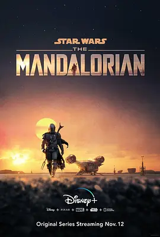

9.2
曼达洛人 第一季
The Mandalorian Season 1
2019
美国
评分 9.2
导演:
黛博拉·周 / 瑞克·法穆易瓦 / 戴夫·菲洛尼 / 布莱丝·达拉斯·霍华德 / 塔伊加·维迪提
演员:
佩德罗·帕斯卡 / 卡尔·韦瑟斯 / 吉娜·卡拉诺 / 塔伊加·维迪提 / 吉安卡罗·埃斯波西托
类型:
冒险,剧情,科幻
剧情简介
在帝国的余烬尚未完全熄灭、新共和国尚未确立之际，一名披着曼达洛武士盔甲的孤胆赏金猎人独自漂泊于边疆星系。他执行任务时，被一笔看似简单的合约拉入了深渊：他必须追回一位神秘幼体。可当他亲眼见到这小家伙，他的世界开始动摇。荒凉星球的黄昏下，尘土飞扬、飞船起落，他冷酷的面具下，隐匿着一颗迟疑的心。他与幼体在荒野中奔逃、在奴隶矿坑激斗、在古老遗迹里潜伏，危险接踵而至。他的不信任被层层击破，他的使命感被那双渴望被护佑的眼睛激活。护送与背叛、追击与救赎交织，武器的冷光斩碎夜色，虚拟的星幕铺陈出西部风格的边疆史诗。随着旅程深入，他逐渐意识：这一次猎物，也许是他必须守护的家庭。他与幼体建立默契，他抛下防备，他背负信念。荒芜星际中，他开始成为自己想象中的英雄——但前方仍是帝国阴影的追击、旧日战士的阴魂。他必须在残酷法外之地，找到属于他的路。